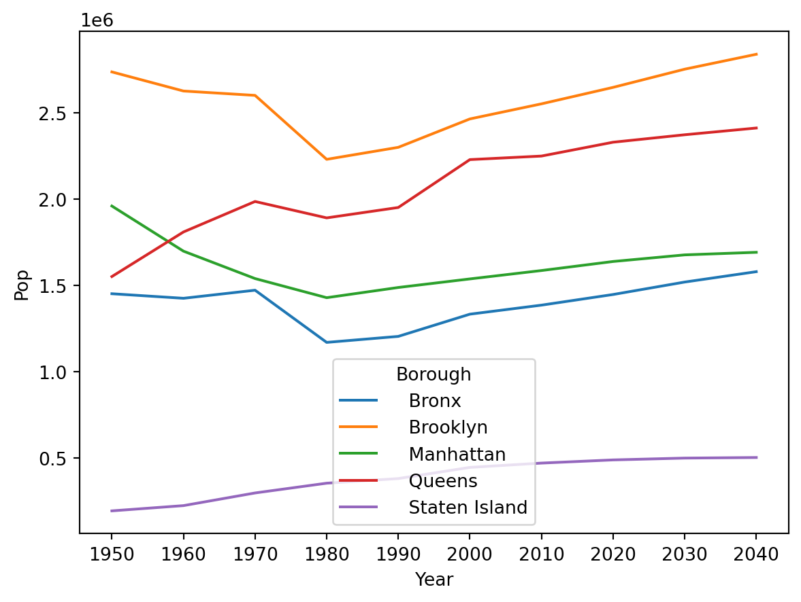
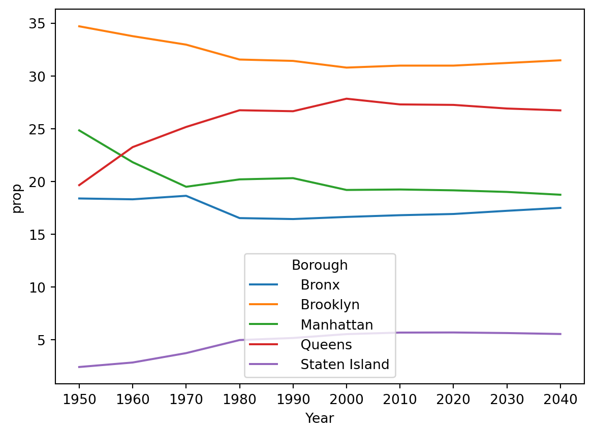
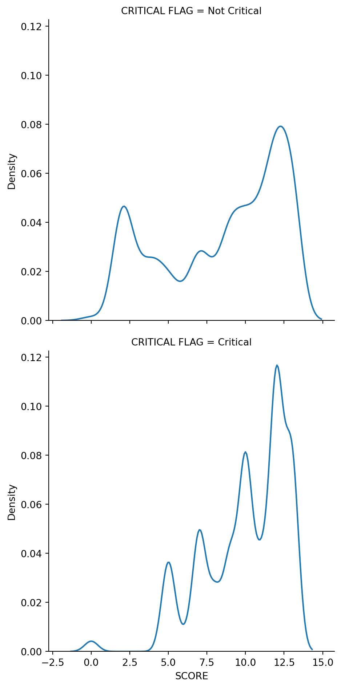
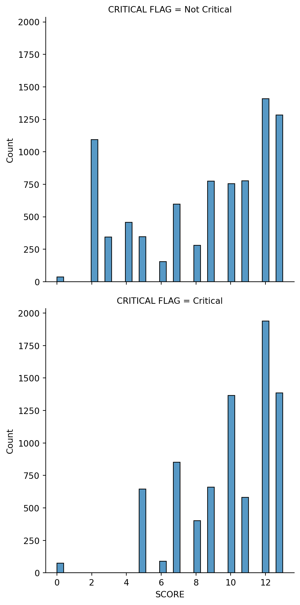
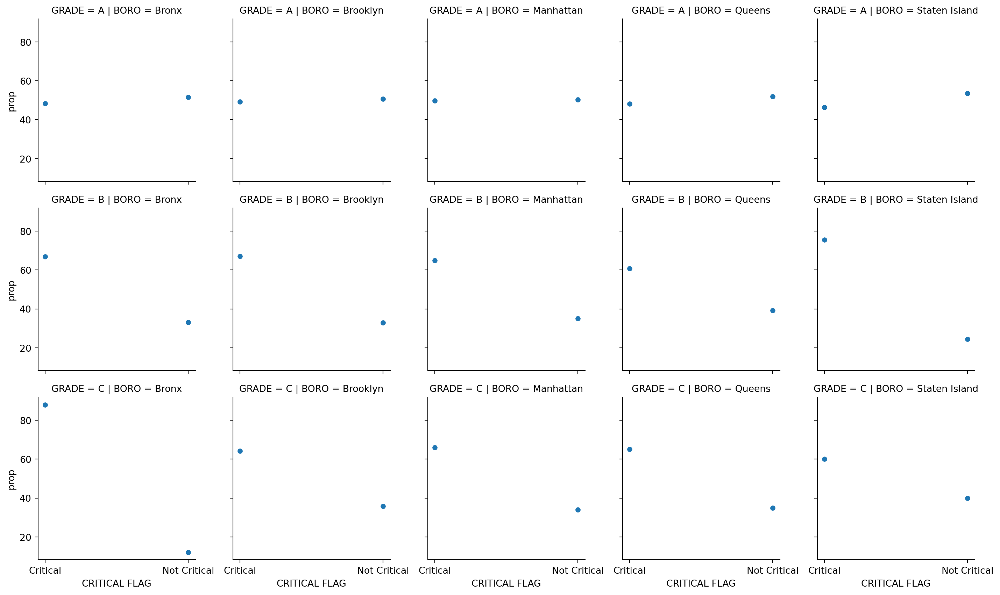

import pandas as pd
import seaborn as snsSpring 2023, DANL 210: Data Preparation and Management
Midterm Exam
Load Libraries
Question 1
Load the DataFrame for Question 1.
nyc_pop = pd.read_csv('https://bcdanl.github.io/data/nyc_pop_by_boro_1950-2040.csv')| Borough | 1950 | 1960 | 1970 | 1980 | 1990 | 2000 | 2010 | 2020 | 2030 | 2040 | |
|---|---|---|---|---|---|---|---|---|---|---|---|
| 0 | Bronx | 1451277.0 | 1424815.0 | 1471701.0 | 1168972.0 | 1203789.0 | 1332650.0 | 1385108.0 | 1446788.0 | 1518998.0 | 1579245.0 |
| 1 | Brooklyn | 2738175.0 | 2627319.0 | 2602012.0 | 2230936.0 | 2300664.0 | 2465326.0 | 2552911.0 | 2648452.0 | 2754009.0 | 2840525.0 |
| 2 | Manhattan | 1960101.0 | 1698281.0 | 1539233.0 | 1428285.0 | 1487536.0 | 1537195.0 | 1585873.0 | 1638281.0 | 1676720.0 | 1691617.0 |
| 3 | Queens | 1550849.0 | 1809578.0 | 1986473.0 | 1891325.0 | 1951598.0 | 2229379.0 | 2250002.0 | 2330295.0 | 2373551.0 | 2412649.0 |
| 4 | Staten Island | 191555.0 | 221991.0 | 295443.0 | 352121.0 | 378977.0 | 443728.0 | 468730.0 | 487155.0 | 497749.0 | 501109.0 |
Q1a
Provide both pandas/seaborn code and a simple comment to describe the trend of population for each borough.
nyc_pop.columns
nyc_pop_long = nyc_pop.melt(id_vars = 'Borough', var_name = 'Year', value_name = 'Pop')| Borough | Year | Pop | |
|---|---|---|---|
| 0 | Bronx | 1950 | 1451277.0 |
| 1 | Brooklyn | 1950 | 2738175.0 |
| 2 | Manhattan | 1950 | 1960101.0 |
| 3 | Queens | 1950 | 1550849.0 |
| 4 | Staten Island | 1950 | 191555.0 |
| 5 | Bronx | 1960 | 1424815.0 |
| 6 | Brooklyn | 1960 | 2627319.0 |
| 7 | Manhattan | 1960 | 1698281.0 |
| 8 | Queens | 1960 | 1809578.0 |
| 9 | Staten Island | 1960 | 221991.0 |
| 10 | Bronx | 1970 | 1471701.0 |
| 11 | Brooklyn | 1970 | 2602012.0 |
| 12 | Manhattan | 1970 | 1539233.0 |
| 13 | Queens | 1970 | 1986473.0 |
| 14 | Staten Island | 1970 | 295443.0 |
| 15 | Bronx | 1980 | 1168972.0 |
| 16 | Brooklyn | 1980 | 2230936.0 |
| 17 | Manhattan | 1980 | 1428285.0 |
| 18 | Queens | 1980 | 1891325.0 |
| 19 | Staten Island | 1980 | 352121.0 |
| 20 | Bronx | 1990 | 1203789.0 |
| 21 | Brooklyn | 1990 | 2300664.0 |
| 22 | Manhattan | 1990 | 1487536.0 |
| 23 | Queens | 1990 | 1951598.0 |
| 24 | Staten Island | 1990 | 378977.0 |
| 25 | Bronx | 2000 | 1332650.0 |
| 26 | Brooklyn | 2000 | 2465326.0 |
| 27 | Manhattan | 2000 | 1537195.0 |
| 28 | Queens | 2000 | 2229379.0 |
| 29 | Staten Island | 2000 | 443728.0 |
| 30 | Bronx | 2010 | 1385108.0 |
| 31 | Brooklyn | 2010 | 2552911.0 |
| 32 | Manhattan | 2010 | 1585873.0 |
| 33 | Queens | 2010 | 2250002.0 |
| 34 | Staten Island | 2010 | 468730.0 |
| 35 | Bronx | 2020 | 1446788.0 |
| 36 | Brooklyn | 2020 | 2648452.0 |
| 37 | Manhattan | 2020 | 1638281.0 |
| 38 | Queens | 2020 | 2330295.0 |
| 39 | Staten Island | 2020 | 487155.0 |
| 40 | Bronx | 2030 | 1518998.0 |
| 41 | Brooklyn | 2030 | 2754009.0 |
| 42 | Manhattan | 2030 | 1676720.0 |
| 43 | Queens | 2030 | 2373551.0 |
| 44 | Staten Island | 2030 | 497749.0 |
| 45 | Bronx | 2040 | 1579245.0 |
| 46 | Brooklyn | 2040 | 2840525.0 |
| 47 | Manhattan | 2040 | 1691617.0 |
| 48 | Queens | 2040 | 2412649.0 |
| 49 | Staten Island | 2040 | 501109.0 |
sns.lineplot(nyc_pop_long,
x = 'Year',
y = 'Pop',
hue = 'Borough')<AxesSubplot:xlabel='Year', ylabel='Pop'>
Q1b
Provide both pandas/seaborn code and a simple comment to describe the trend of the proportion of population for each borough.
- Note: The proportion of population for each borough is each borough’s share of total population in NYC in each year.
q1b = (
nyc_pop_long
.assign(tot = lambda x: x.groupby('Year')['Pop'].transform('sum'),
prop = lambda x: 100 * x['Pop'] / x['tot'],
chk = lambda x: x.groupby('Year')['prop'].transform('sum') )
)| Borough | Year | Pop | tot | prop | chk | |
|---|---|---|---|---|---|---|
| 0 | Bronx | 1950 | 1451277.0 | 7891957.0 | 18.389317 | 100.0 |
| 1 | Brooklyn | 1950 | 2738175.0 | 7891957.0 | 34.695767 | 100.0 |
| 2 | Manhattan | 1950 | 1960101.0 | 7891957.0 | 24.836691 | 100.0 |
| 3 | Queens | 1950 | 1550849.0 | 7891957.0 | 19.651007 | 100.0 |
| 4 | Staten Island | 1950 | 191555.0 | 7891957.0 | 2.427218 | 100.0 |
| 5 | Bronx | 1960 | 1424815.0 | 7781984.0 | 18.309148 | 100.0 |
| 6 | Brooklyn | 1960 | 2627319.0 | 7781984.0 | 33.761557 | 100.0 |
| 7 | Manhattan | 1960 | 1698281.0 | 7781984.0 | 21.823239 | 100.0 |
| 8 | Queens | 1960 | 1809578.0 | 7781984.0 | 23.253427 | 100.0 |
| 9 | Staten Island | 1960 | 221991.0 | 7781984.0 | 2.852627 | 100.0 |
| 10 | Bronx | 1970 | 1471701.0 | 7894862.0 | 18.641250 | 100.0 |
| 11 | Brooklyn | 1970 | 2602012.0 | 7894862.0 | 32.958296 | 100.0 |
| 12 | Manhattan | 1970 | 1539233.0 | 7894862.0 | 19.496642 | 100.0 |
| 13 | Queens | 1970 | 1986473.0 | 7894862.0 | 25.161592 | 100.0 |
| 14 | Staten Island | 1970 | 295443.0 | 7894862.0 | 3.742219 | 100.0 |
| 15 | Bronx | 1980 | 1168972.0 | 7071639.0 | 16.530425 | 100.0 |
| 16 | Brooklyn | 1980 | 2230936.0 | 7071639.0 | 31.547651 | 100.0 |
| 17 | Manhattan | 1980 | 1428285.0 | 7071639.0 | 20.197369 | 100.0 |
| 18 | Queens | 1980 | 1891325.0 | 7071639.0 | 26.745214 | 100.0 |
| 19 | Staten Island | 1980 | 352121.0 | 7071639.0 | 4.979341 | 100.0 |
| 20 | Bronx | 1990 | 1203789.0 | 7322564.0 | 16.439447 | 100.0 |
| 21 | Brooklyn | 1990 | 2300664.0 | 7322564.0 | 31.418831 | 100.0 |
| 22 | Manhattan | 1990 | 1487536.0 | 7322564.0 | 20.314414 | 100.0 |
| 23 | Queens | 1990 | 1951598.0 | 7322564.0 | 26.651839 | 100.0 |
| 24 | Staten Island | 1990 | 378977.0 | 7322564.0 | 5.175469 | 100.0 |
| 25 | Bronx | 2000 | 1332650.0 | 8008278.0 | 16.640906 | 100.0 |
| 26 | Brooklyn | 2000 | 2465326.0 | 8008278.0 | 30.784721 | 100.0 |
| 27 | Manhattan | 2000 | 1537195.0 | 8008278.0 | 19.195075 | 100.0 |
| 28 | Queens | 2000 | 2229379.0 | 8008278.0 | 27.838432 | 100.0 |
| 29 | Staten Island | 2000 | 443728.0 | 8008278.0 | 5.540867 | 100.0 |
| 30 | Bronx | 2010 | 1385108.0 | 8242624.0 | 16.804212 | 100.0 |
| 31 | Brooklyn | 2010 | 2552911.0 | 8242624.0 | 30.972067 | 100.0 |
| 32 | Manhattan | 2010 | 1585873.0 | 8242624.0 | 19.239905 | 100.0 |
| 33 | Queens | 2010 | 2250002.0 | 8242624.0 | 27.297157 | 100.0 |
| 34 | Staten Island | 2010 | 468730.0 | 8242624.0 | 5.686660 | 100.0 |
| 35 | Bronx | 2020 | 1446788.0 | 8550971.0 | 16.919576 | 100.0 |
| 36 | Brooklyn | 2020 | 2648452.0 | 8550971.0 | 30.972529 | 100.0 |
| 37 | Manhattan | 2020 | 1638281.0 | 8550971.0 | 19.159005 | 100.0 |
| 38 | Queens | 2020 | 2330295.0 | 8550971.0 | 27.251817 | 100.0 |
| 39 | Staten Island | 2020 | 487155.0 | 8550971.0 | 5.697072 | 100.0 |
| 40 | Bronx | 2030 | 1518998.0 | 8821027.0 | 17.220194 | 100.0 |
| 41 | Brooklyn | 2030 | 2754009.0 | 8821027.0 | 31.220956 | 100.0 |
| 42 | Manhattan | 2030 | 1676720.0 | 8821027.0 | 19.008218 | 100.0 |
| 43 | Queens | 2030 | 2373551.0 | 8821027.0 | 26.907876 | 100.0 |
| 44 | Staten Island | 2030 | 497749.0 | 8821027.0 | 5.642756 | 100.0 |
| 45 | Bronx | 2040 | 1579245.0 | 9025145.0 | 17.498278 | 100.0 |
| 46 | Brooklyn | 2040 | 2840525.0 | 9025145.0 | 31.473456 | 100.0 |
| 47 | Manhattan | 2040 | 1691617.0 | 9025145.0 | 18.743378 | 100.0 |
| 48 | Queens | 2040 | 2412649.0 | 9025145.0 | 26.732523 | 100.0 |
| 49 | Staten Island | 2040 | 501109.0 | 9025145.0 | 5.552365 | 100.0 |
sns.lineplot(q1b,
x = 'Year',
y = 'prop',
hue = 'Borough')<AxesSubplot:xlabel='Year', ylabel='prop'>
Question 2
Load DataFrame for Q2a and Q2b
restaurant = pd.read_csv('https://bcdanl.github.io/data/DOHMH_NYC_Restaurant_Inspection.csv')| CAMIS | DBA | BORO | STREET | CUISINE DESCRIPTION | INSPECTION DATE | ACTION | VIOLATION CODE | VIOLATION DESCRIPTION | CRITICAL FLAG | SCORE | GRADE | |
|---|---|---|---|---|---|---|---|---|---|---|---|---|
| 0 | 30191841 | dj reynolds pub and restaurant | Manhattan | WEST 57 STREET | Irish | 01/04/2022 | Violations were cited in the following area(s). | 10F | Non-food contact surface improperly constructed. Unacceptable material used. Non-food contact surface or equipment improperly maintained and/or not properly sealed, raised, spaced or movable to allow accessibility for cleaning on all sides, above and underneath the unit. | Not Critical | 12 | A |
| 1 | 40356018 | riviera caterers | Brooklyn | STILLWELL AVENUE | American | 02/01/2022 | Violations were cited in the following area(s). | 02G | Cold food item held above 41º F (smoked fish and reduced oxygen packaged foods above 38 ºF) except during necessary preparation. | Critical | 7 | A |
| 2 | 40356483 | wilken's fine food | Brooklyn | AVENUE U | Sandwiches | 08/19/2022 | Violations were cited in the following area(s). | 10F | Non-food contact surface or equipment made of unacceptable material, not kept clean, or not properly sealed, raised, spaced or movable to allow accessibility for cleaning on all sides, above and underneath the unit. | Not Critical | 2 | A |
| 3 | 40356731 | taste the tropics ice cream | Brooklyn | NOSTRAND AVENUE | Frozen Desserts | 01/17/2023 | Violations were cited in the following area(s). | 08A | Establishment is not free of harborage or conditions conducive to rodents, insects or other pests. | Not Critical | 9 | A |
| 4 | 40357217 | wild asia | Bronx | SOUTHERN BOULEVARD | American | 07/28/2021 | Violations were cited in the following area(s). | 02G | Cold food item held above 41º F (smoked fish and reduced oxygen packaged foods above 38 ºF) except during necessary preparation. | Critical | 10 | A |
| … | … | … | … | … | … | … | … | … | … | … | … | … |
| 17628 | 50133218 | sades southern cafe llc | Bronx | EAST 233 STREET | Caribbean | 03/06/2023 | Violations were cited in the following area(s). | 06A | Personal cleanliness is inadequate. Outer garment soiled with possible contaminant. Effective hair restraint not worn where required. Jewelry worn on hands or arms. Fingernail polish worn or fingernails not kept clean and trimmed. | Critical | 12 | A |
| 17629 | 50133250 | red brick | Brooklyn | NOSTRAND AVENUE | Caribbean | 03/22/2023 | Violations were cited in the following area(s). | 08A | Establishment is not free of harborage or conditions conducive to rodents, insects or other pests. | Not Critical | 4 | A |
| 17630 | 50133302 | potbelly | Manhattan | EAST 17 STREET | Sandwiches | 03/20/2023 | Violations were cited in the following area(s). | 06D | Food contact surface not properly washed, rinsed and sanitized after each use and following any activity when contamination may have occurred. | Critical | 7 | A |
| 17631 | 50133309 | potbelly | Manhattan | BROADWAY | Soups/Salads/Sandwiches | 03/27/2023 | Violations were cited in the following area(s). | 10F | Non-food contact surface or equipment made of unacceptable material, not kept clean, or not properly sealed, raised, spaced or movable to allow accessibility for cleaning on all sides, above and underneath the unit. | Not Critical | 4 | A |
| 17632 | 50133690 | island shack | Brooklyn | FRANKLIN AVENUE | Caribbean | 03/23/2023 | Violations were cited in the following area(s). | 10F | Non-food contact surface or equipment made of unacceptable material, not kept clean, or not properly sealed, raised, spaced or movable to allow accessibility for cleaning on all sides, above and underneath the unit. | Not Critical | 12 | A |
Variable Description
CAMIS:- This is an unique identifier for the entity (restaurant);
- 10-digit integer
DBA:- This field represents the name (doing business as) of the entity (restaurant);
- Public business name, may change at discretion of restaurant owner
BORO:- Borough in which the entity (restaurant) is located.;
- •
1= MANHATTAN - •
2= BRONX - •
3= BROOKLYN - •
4= QUEENS - •
5= STATEN ISLAND - •
0= Missing;
CUISINE DESCRIPTION:- This field describes the entity (restaurant) cuisine.
ACTION:- This field represents the actions that is associated with each restaurant inspection. ;
- • Violations were cited in the following area(s).
- • No violations were recorded at the time of this inspection.
- • Establishment re-opened by DOHMH
- • Establishment re-closed by DOHMH
- • Establishment Closed by DOHMH.
- • Violations were cited in the following area(s) and those requiring immediate action were addressed.
VIOLATION CODE:- Violation code associated with an establishment (restaurant) inspection
VIOLATION DESCRIPTION:- Violation description associated with an establishment (restaurant) inspection
CRITICAL FLAG:- Indicator of critical violation;
- •
Critical - •
Not Critical - •
Not Applicable; - Critical violations are those most likely to contribute to food-borne illness
SCORE:- Total score for a particular inspection;
GRADE:- Grade associated with the inspection;
- •
N= Not Yet Graded - •
A= Grade A - •
B= Grade B - •
C= Grade C - •
Z= Grade Pending - •
P= Grade Pending issued on re-opening following an initial inspection that resulted in a closure
Q2a.
What are the mean, standard deviation, first quartile, median, third quartile, and maximum of SCORE for each GRADE of restaurants?
q2a = restaurant.groupby('GRADE')['SCORE'].describe()| count | mean | std | min | 25% | 50% | 75% | max | |
|---|---|---|---|---|---|---|---|---|
| GRADE | ||||||||
| A | 16305.0 | 9.261515 | 3.415952 | 0.0 | 7.0 | 10.0 | 12.0 | 13.0 |
| B | 1034.0 | 21.027079 | 4.156573 | 0.0 | 18.0 | 21.0 | 24.0 | 36.0 |
| C | 294.0 | 38.561224 | 10.834844 | 0.0 | 31.0 | 36.0 | 44.0 | 86.0 |
Q2b.
Provide both (1) pandas/seaborn code and (2) a simple comment to describe how the distribution of SCORE varies by CRITICAL FLAG when GRADE is A.
sns.displot(data = restaurant.query('GRADE == "A"'), x='SCORE', kind='kde', row='CRITICAL FLAG')<seaborn.axisgrid.FacetGrid at 0x7fe578a16430>
sns.displot(data = restaurant.query('GRADE == "A"'), x='SCORE', row='CRITICAL FLAG')<seaborn.axisgrid.FacetGrid at 0x7fe579aa6df0>
- For
Not Criticaltype, the twoSCOREvalues around 1 and 12 are most common, while 12 is the single most commonSCOREvalue forCriticaltype.
Q2c.
- For each pair of
BOROandGRADE, calculate- the proportion of
Criticalviolation and
- the proportion of
- the proportion of
Not Criticalviolation.
- the proportion of
- Make a simple comment on how the proportions vary by
BOROandGRADE.
.assign()with.transform()
q2c_ = (
restaurant
.groupby(['BORO', 'GRADE', 'CRITICAL FLAG'])
.size()
.reset_index(name='n')
.assign(tot = lambda x: x.groupby(['BORO', 'GRADE'])['n'].transform('sum'),
prop = lambda x: 100 * x['n'] / x['tot'])
).apply()with.assign()
q2c = (
restaurant
.groupby(['BORO', 'GRADE', 'CRITICAL FLAG'])
.size()
.reset_index(name='n')
.groupby(['BORO', 'GRADE'])
.apply(lambda x: x.assign( prop = 100 * x['n'] / x['n'].sum() ) )
)value_counts(normalize = True)can be useful:
q2c__ = (
restaurant
.groupby(['BORO', 'GRADE'])['CRITICAL FLAG']
.value_counts(normalize = True)
)| BORO | GRADE | CRITICAL FLAG | n | prop | |
|---|---|---|---|---|---|
| 0 | Bronx | A | Critical | 637 | 48.404255 |
| 1 | Bronx | A | Not Critical | 679 | 51.595745 |
| 2 | Bronx | B | Critical | 73 | 66.972477 |
| 3 | Bronx | B | Not Critical | 36 | 33.027523 |
| 4 | Bronx | C | Critical | 22 | 88.000000 |
| 5 | Bronx | C | Not Critical | 3 | 12.000000 |
| 6 | Brooklyn | A | Critical | 2082 | 49.313122 |
| 7 | Brooklyn | A | Not Critical | 2140 | 50.686878 |
| 8 | Brooklyn | B | Critical | 197 | 67.006803 |
| 9 | Brooklyn | B | Not Critical | 97 | 32.993197 |
| 10 | Brooklyn | C | Critical | 54 | 64.285714 |
| 11 | Brooklyn | C | Not Critical | 30 | 35.714286 |
| 12 | Manhattan | A | Critical | 3174 | 49.733626 |
| 13 | Manhattan | A | Not Critical | 3208 | 50.266374 |
| 14 | Manhattan | B | Critical | 226 | 64.942529 |
| 15 | Manhattan | B | Not Critical | 122 | 35.057471 |
| 16 | Manhattan | C | Critical | 64 | 65.979381 |
| 17 | Manhattan | C | Not Critical | 33 | 34.020619 |
| 18 | Queens | A | Critical | 1800 | 48.128342 |
| 19 | Queens | A | Not Critical | 1940 | 51.871658 |
| 20 | Queens | B | Critical | 147 | 60.743802 |
| 21 | Queens | B | Not Critical | 95 | 39.256198 |
| 22 | Queens | C | Critical | 54 | 65.060241 |
| 23 | Queens | C | Not Critical | 29 | 34.939759 |
| 24 | Staten Island | A | Critical | 299 | 46.356589 |
| 25 | Staten Island | A | Not Critical | 346 | 53.643411 |
| 26 | Staten Island | B | Critical | 31 | 75.609756 |
| 27 | Staten Island | B | Not Critical | 10 | 24.390244 |
| 28 | Staten Island | C | Critical | 3 | 60.000000 |
| 29 | Staten Island | C | Not Critical | 2 | 40.000000 |
- Visualization helps us see variations in data.
(
sns.FacetGrid(
data = q2c,
col='BORO',
row = 'GRADE')
.map(sns.scatterplot, 'CRITICAL FLAG', 'prop' )
)<seaborn.axisgrid.FacetGrid at 0x7fe579dcbdf0>
sns.barplotwould be better.
(
sns.FacetGrid(
data = q2c,
col='BORO',
row = 'GRADE')
.map(sns.barplot, 'CRITICAL FLAG', 'prop' )
)/Users/byeong-hakchoe/opt/anaconda3/lib/python3.9/site-packages/seaborn/axisgrid.py:712: UserWarning:
Using the barplot function without specifying `order` is likely to produce an incorrect plot.
<seaborn.axisgrid.FacetGrid at 0x7fe579d9e790>
For
GRADEA, the probability distribution ofCRITICAL FLAGare similar acrossBOROs.For
GRADEB, the restaurants inStaten Islandare more likely to beCriticalthan in otherBOROs.For
GRADEC, the restaurants inBronxare more likely to beCriticalthan in otherBOROs.
Q2d.
For the 10 most common CUISINE DESCRIPTION values, find the CUISINE DESCRIPTION value that has the highest proportion of GRADE A.
q2d = (
restaurant
.groupby('CUISINE DESCRIPTION')
.apply(lambda x: x.assign( n = x.shape[0] ) )
.reset_index(drop = True)
.query('n.rank(method="dense", ascending=False) <= 10')
.groupby(['CUISINE DESCRIPTION', 'GRADE'])
.size()
.reset_index(name='n')
.groupby('CUISINE DESCRIPTION')
.apply(lambda x: x.assign( prop_A = x['n'] / x['n'].sum() ) )
.query('GRADE == "A"')
.sort_values(by = 'prop_A', ascending = False)
.reset_index(drop = True)
)| CUISINE DESCRIPTION | GRADE | n | prop_A | |
|---|---|---|---|---|
| 0 | Donuts | A | 499 | 0.988119 |
| 1 | Coffee/Tea | A | 1356 | 0.958982 |
| 2 | American | A | 3505 | 0.952964 |
| 3 | Italian | A | 653 | 0.947750 |
| 4 | Pizza | A | 961 | 0.915238 |
| 5 | Bakery Products/Desserts | A | 560 | 0.910569 |
| 6 | Japanese | A | 529 | 0.905822 |
| 7 | Mexican | A | 515 | 0.884880 |
| 8 | Chinese | A | 1205 | 0.878280 |
| 9 | Latin American | A | 464 | 0.852941 |
Q2e.
- Find the 3 most common names of restaurants (
DBA) in eachBORO.- If the third most common
DBAvalues are multiple, please include all theDBAvalues.
- If the third most common
- Overall, which
DBAvalue is most common in NYC?
q2e = (
restaurant[['DBA', 'BORO']]
.groupby(['BORO', 'DBA'])
.size()
.reset_index(name='n')
)
q2e['ranking'] = q2e.groupby(['BORO'])['n'].rank(method='dense', ascending=False)
q2e = (
q2e
.query('ranking <= 3')
.sort_values(by=['BORO', 'ranking'])
.reset_index(drop = True)
.drop_duplicates()
)
q2e_ = (
restaurant[['DBA']]
.groupby(['DBA'])
.value_counts()
.sort_values(ascending = False)
)| BORO | DBA | n | ranking | |
|---|---|---|---|---|
| 0 | Bronx | dunkin | 54 | 1.0 |
| 1 | Bronx | mcdonald's | 33 | 2.0 |
| 2 | Bronx | kennedy fried chicken | 32 | 3.0 |
| 3 | Brooklyn | dunkin | 93 | 1.0 |
| 4 | Brooklyn | mcdonald's | 46 | 2.0 |
| 5 | Brooklyn | starbucks | 43 | 3.0 |
| 6 | Manhattan | starbucks | 178 | 1.0 |
| 7 | Manhattan | dunkin | 108 | 2.0 |
| 8 | Manhattan | chipotle mexican grill | 52 | 3.0 |
| 9 | Manhattan | subway | 52 | 3.0 |
| 10 | Queens | dunkin | 113 | 1.0 |
| 11 | Queens | subway | 50 | 2.0 |
| 12 | Queens | dunkin', baskin robbins | 47 | 3.0 |
| 13 | Staten Island | dunkin | 34 | 1.0 |
| 14 | Staten Island | subway | 13 | 2.0 |
| 15 | Staten Island | starbucks | 9 | 3.0 |
DBA
dunkin 402
starbucks 286
mcdonald's 170
subway 166
dunkin', baskin robbins 107
...
ganda sushi 1
ganni's pizzeria 1
gantry bar & kitchen 1
gaoming bakery 1
zz's pizza & grill 1
Length: 13914, dtype: int64Note that
chipotle mexican grillandsubwayare both the third most popular franchise/chain inManhattan.Overall,
dunkinis the most popular franchise/chain in NYC.
Q2f.
For all the DBA values that appear in the result of Q2f, find the DBA value that is most likely to commit critical violation.
q2f_ = (
restaurant
.loc[(restaurant['DBA'].isin(q2e['DBA'])) & (restaurant['CRITICAL FLAG'] == 'Critical'), ['DBA']]
.groupby('DBA')
.size()
.reset_index(name='n_crit')
)
q2f__ = (
restaurant
.loc[(restaurant['DBA'].isin(q2e['DBA'])) & (restaurant['CRITICAL FLAG'] != 'Critical'), ['DBA']]
.groupby('DBA')
.size()
.reset_index(name='n_not_crit')
)
q2f__['n_crit'] = q2f_['n_crit']
q2f__['prop'] = q2f__['n_crit'] / (q2f__['n_crit'] + q2f__['n_not_crit'])
q2f__ = q2f__.sort_values('prop', ascending=False).shift(1)can be useful:
q2f = (
restaurant[restaurant['DBA'].isin(q2e['DBA'])]
.groupby(['DBA', 'CRITICAL FLAG'])
.size()
.reset_index(name='n')
.groupby('DBA')
.apply(lambda x: x.assign(lag_n=x['n'].shift(1),
tot=x['n'].sum(),
prop_crit=x['n'].shift(1)/x['n'].sum()))
.reset_index()
.loc[:, ['DBA', 'prop_crit']]
.sort_values(by='prop_crit', ascending=False)
.dropna(subset=['prop_crit'])
)| DBA | prop_crit | |
|---|---|---|
| 13 | subway | 0.475904 |
| 3 | dunkin | 0.415423 |
| 5 | dunkin', baskin robbins | 0.411215 |
| 7 | kennedy fried chicken | 0.403846 |
| 1 | chipotle mexican grill | 0.384615 |
| 9 | mcdonald's | 0.370588 |
| 11 | starbucks | 0.325175 |
- Among popular franchises/chains,
subwayis most likely to commitCriticalviolation in NYC.